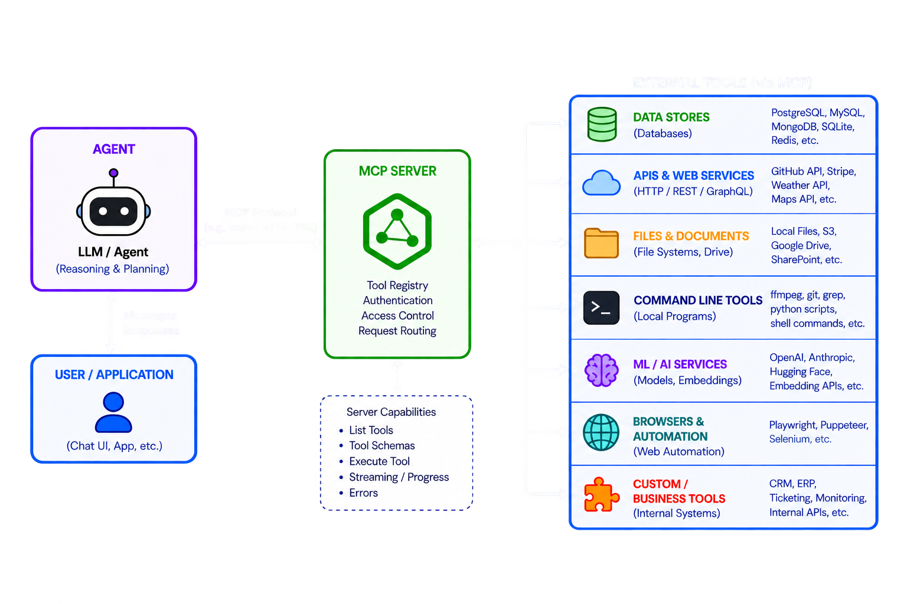

Tech Talk by Gavin Wiggins
September 2, 2026
None of the above.
“An LLM agent runs tools in a loop to achieve a goal” ~ Simon Willison 2025
Check out Simon Willison's Weblog at simonwillison.net
Provide LLM agnostic features to build agents that call tools/functions, maintain state, and coordinate multi-step workflows.
Feels like JavaScript UI frameworks, a new one pops up every month.
⚠️ Be aware of vendor lock-in especially for agent deployment.
Sync and async examples.
from agents import Agent, Runner
agent = Agent(name="Assistant", instructions="You are a helpful assistant")
result = Runner.run_sync(agent, "Write a haiku about recursion in programming.")
print(result.final_output)
import asyncio
from agents import Agent, Runner
agent = Agent(
name="History Tutor",
instructions="You answer history questions clearly and concisely.",
)
async def main():
result = await Runner.run(agent, "When did the Roman Empire fall?")
print(result.final_output)
if __name__ == "__main__":
asyncio.run(main())
MCP (Model Context Protocol) is an open-source standard for connecting AI applications to external systems.
FastMCP is a Python package for building MCP servers and clients.
from fastmcp import FastMCP
mcp = FastMCP("Demo 🚀")
@mcp.tool
def add(a: int, b: int) -> int:
"""Add two numbers."""
return a + b
if __name__ == "__main__":
mcp.run()
MCP documentation at https://modelcontextprotocol.io
FastMCP documentation at https://gofastmcp.com

A standard way to give AI agents new capabilities and expertise.
A skill is just a folder that contains a SKILL.md file and optional resources.
my-skill/
├── SKILL.md # Required metadata + instructions
├── scripts/ # Optional executable code
├── references/ # Optional documentation
├── assets/ # Optional templates, resources
└── ... # Any additional files or directories
When a skill activates, its full SKILL.md body loads into the agent’s context window alongside conversation history, system context, and other active skills.
More information about agent skills at https://agentskills.io
YAML frontmatter followed by Markdown content (the body).
---
name: roll-dice
description: Roll dice using a random number generator. Use when asked to
roll a die (d6, d20, etc.), roll dice, or generate a random dice roll.
---
To roll a die, use the following command that generates a random number from 1
to the given number of sides:
```bash
echo $((RANDOM % <sides> + 1))
```
Replace `<sides>` with the number of sides on the die (e.g., 6 for a standard
die, 20 for a d20).
Like a README.md file but for agents.
Provides instructions to help AI coding agents work on your project.
# Example of AGENTS.md
## Setup commands
- Install deps: `pnpm install`
- Start dev server: `pnpm dev`
- Run tests: `pnpm test`
## Code style
- TypeScript strict mode
- Single quotes, no semicolons
- Use functional patterns where possible
More information about the AGENTS.md file at https://agents.md
Model
→ GPT, Claude, Gemini, Llama, etc.
Agent SDK/framework
→ LangGraph, OpenAI Agents SDK, Pydantic AI
Agent harness/runtime
→ Hermes, OpenClaw, Pi, similar systems
Finished agent/product
→ Claude Code, Codex, Devin, ChatGPT-style agents